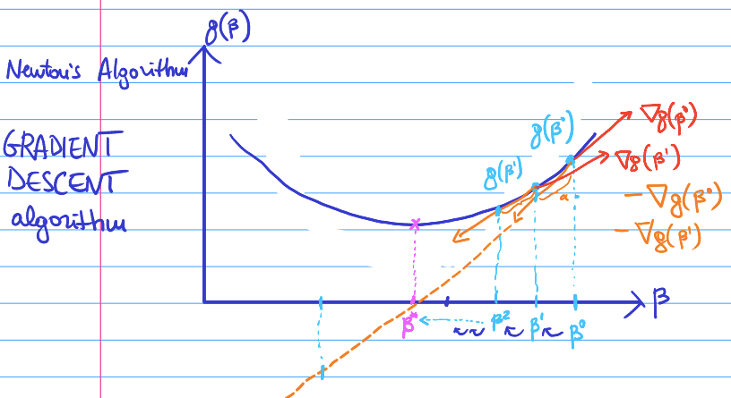
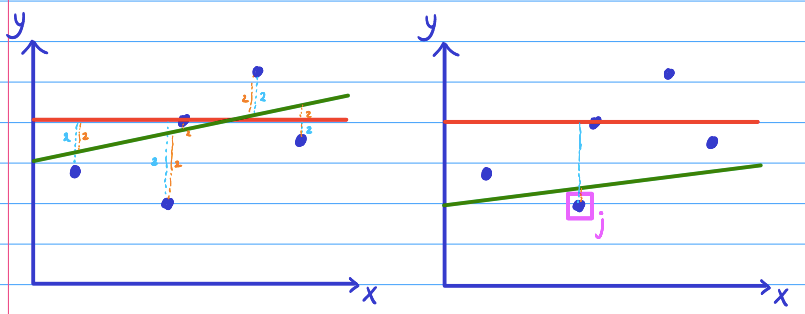

Chapter - 8 How much does the estimator (random variable) defer from the real values
\(Bias[\hat y] = E[\hat y]-f(x)\) =\(Bias^2[\hat y] = (E[\hat y] -f(x))^2\)
Recalling:
Variance = \(Var[Z] = E[Z^2] - (E[Z])^2\)
Rewrite \(E[(Z - E[Z])^2\)
\(\mu = E[Z]\)
\(E[(Z-\mu)^2]\)
The expected value of a random variable is a constant. Therefore, I can transform:
\(E[E[Z]] = E[Z]\)
Training test split = the expected value in the following scenario.
\(E[(y-\hat y)^2] = E[(y-f(x) + f(x) - \hat y)^2]\)
Next we can solve this equation:
\(E[(y-f(x))^2] + 2E[(y-f(x))(f(x)-\hat y)] + E[(f(x)-\hat y)^2]\)
Definition of \(y = f(x)+ ϵ\)
\(E[ϵ^2] + 2E[yf(x)-(f(x))^2 - y\hat y + \hat yf(x)] + E[(f(x)- \hat y )^2]\)
We know that \(E[ϵ^2]\) is \(var[ϵ]\)

We want the error of the model to be as low as possible. We cannot change the noise. Therefore, we want the variance and the trade off to be as low as possible. The best we can do is that they are both 0.
If you reduce the variance, naturally there will be at least some biased introduced and vice versa.

The variance of \(\hat y\) = How much would the prediction \(\hat y\) vary when we change the training set.
My objective is that the predictor is similar to the real function = \(\hat f \approx f\). If I have a predictor that varies a lot based on the training data, it cannot really be similar to the real function. Naturally, I want the variance of \(\hat y\) to be lower.
Model with high variance = Overfitted model (too complex). A small change in the training set –> large change in the predictions. This has a low bias.
If my model learns the noise of the training set, it can make perfect predictions. However, when you apply the model to a different data set, it will give bad predictions. Having too many parameters allows the model to learn the noise.
If a model is very complicated, it is more likely to be overfitted (high variance, low bias).
Model with high bias = Underfitted model (too simple). Large error even in the training set. This typically has a low variance. It is stable but it will give bad predictions and not accurate.
We can visualize this by plotting a linear regression model. We have made a small change in the training set (one point has moved) and there has been a small variance in the regression line.

So we can conclude that there is a low variance in the model.
Now we will look at a polynomial model where there is 0 bias. Therefore,
the model must intercept perfectly all the points in the training set.

If I want to intercept 4 points in \(R^2\), what is the smallest degree of a polynomial that 1 need? –> N-1
The green model has a high variance, but the bias - 0. This is a overfitted model.
8.0.1 Training (fitting) a model
Training a model: Finding the parameters (of a parametric model) which minimize the loss function over the training set.
Training set has N points –> \((X_1,Y_1),....,(X_n,Y_n)\).
Minimize our parameters:
\(\beta :=(\beta_1....,\beta_k)\) = The K parameters of my model.
I want to minimize the training error: \(\frac{1}{n} \sum_{i=1}^{n}L(y_i-\hat f(\beta_ix_i))\)
k = p+1. These are all the parameters plus the intercept in the example of a regression model.
Renamed function of betas: \(g(\beta)\)
Not all functions are born equal. There are some functions that are easier to deal with. Fe. if they are continuous. In the case if I am in luck there is a good chance that I can find the minimize. If these conditions don’t hold it will be very difficult. There is a chance that a algorithm finds not necessarily the global minimum but it does find the local minimum. This can be visualized below:

A convex function: a continuous function whose value at the midpoint of every interval in its domain does not exceed the arithmetic mean of its values at the ends of the interval.mo
Hereby, the global minimum is automatically also the local minimum as there is only one.

Convex vs concave:

If I want to find a minimum of a function, I need to find a point where the first derivative vanishes. Multiple things could happen:
You find a local min (might be global)
You find a local max (might be global)
You find a saddle point
8.1 Gradient descent
Instead, we present an algorithm that tries to find the local minimum using the first derivative. It is a multivariate function as:
\(g:R^k -> R^+_0\) = \(\nabla g\)
\(\nabla g(\beta_1,....,\beta_k)\) = \((\frac{\partial g}{\partial\beta_1}(\beta_1,...,\beta_k),....,\frac{\partial g}{\partial\beta_1}(\beta_1,...,\beta_k))\)
a vector that has all the partial derivatives at that point.
Gradient = a measure of how steep a slope is
Derivative = of a function of a real variable measures the sensitivity to change of the function value (output value) with respect to a change in its argument (input value).
Function = something that will take a input and will produce a given output.
We want to go against the gradient (-) to find the minimum. We want to
follow the blue steps to arrive at the minimum (pink).

Newton’s Algorithm / Gradient Descent Algorithm = only uses one parameter = alpha (\(\alpha\)), can be any positive number.
Fix an arbitrary \(\beta_0R_k\) to start from.
For t=0,….,T: the maximum number of steps that I will do (going from \(\beta_1 - \beta_2\)). The equation is:
\(\beta^{t+1} = \beta^t-\alpha\nabla g(\beta^t)\)
If the \(\nabla g(\beta^{t+1})=0\) then break (You have found the global minimum if the function in convex)Return the last \(\beta^t\) available.
\(\alpha\) = The step size / learning rate.
If our function looks like below:

We will find a local minimum and will be stuck in the equation as the gradient is 0.
The above equation considers a fixed parameter \(\alpha\). It is also possible to consider a changing parameter = \(\alpha_t\).
If \(\alpha\) grows, then we move more at each iteration. This could mean that we move faster as there are fewer iterations. Alternatively, we start jumping all over the space of the parameters without converging or converging slowly.
Here is an example of the set size (learning rate) being too large and experiencing “jumping”:

How to choose \(\alpha\)? Trying different values and finding the best solution. “Typically” \(\alpha = 10^{-3} = 0.01\).
Each iteration of the gradient descent algorithm we do:
\(\beta^{t+1} = \beta^t-\alpha\nabla g(\beta^t)\)
\(\nabla g(\beta^t) = \nabla(\frac{1}{n} \sum_{i=1}^{n}g_i(\beta^t))\)
Rewrite:
\(\nabla g(\beta^t) = \frac{1}{n} \sum_{i=1}^{n}\nabla g_i(\beta^t)\)
To compute \(\nabla g\) I used N gradients. These are one for each point in the training set. This must happen at each iteration.
In big data settings, it is not unlikely that we have a training set that have millions of data points. This would require too many gradients (too slow).
8.1.1 Sarcastic gradient descent
In the previous computation we had to computes n gradients =
\(\nabla g(\beta^t) = \frac{1}{n} \sum_{i=1}^{n}\nabla g_i(\beta^t)\)
However, we can replace this with something that only needs to compute 1 gradient, no matter how large the data set is.
Fix an arbitrary \(\beta^0 e R^k\) to start from
For \(t=0,....T:\)
Draw \(jϵ\) {1,….,m} with uniform random distribution
\(\beta^{t+1} = \beta^t - \alpha \nabla g_j(\beta^t)\)
etc. everything else is like in gradient descent
The only difference is how we jump from the iterations. Instead of computing the entire gradient.
Gradient descent = \(\beta^{t+1}= \beta^t - \alpha * \frac{1}{n} \sum_{i=1}^{n}\nabla g_i(\beta^t)\)
vs
Sarcastic gradient descent = \(\beta^{t+1}= \beta^t - \alpha \nabla g_j(\beta^t)\)
Where J is taken uniformly at random = j~\(U({1,....,m})\)
GD vs SGD

\(\beta=(\beta_0, \beta_1)\) initial \(\beta^0=(\beta^0_0, \beta^0_1)\)
next \(\beta^1=(\beta^1_0, \beta^1_1)\)
Here the MSE\((\beta^0)\) < MSE \(\beta^1\)
In linear regression the: \(g(\beta) = \frac{1}{n} \sum_{i=1}^{n}y_i-(\beta^0+\beta^1x_i))^2 = MSE(\beta)\)
In sarcastic gradient descent:
\(g_j(\beta) = y_j-(\beta^0+\beta_1x_j))^2 = SE_j(\beta)\)
Here the squared error is only regarding the random point j. The regression line is changing so that the squared error of j becomes smaller. By doing so over and over and choosing random uniformly j, it is as if I was optimizing for all the squared errors. This can be proven by:
Instead of using:
\(\nabla g(\beta)= \frac{1}{n} \sum_{i=1}^{n}\nabla g_i(\beta)\)
We use:
\(\nabla g_j(\beta)\)
Therefore, in expectation of a discrete random variable:
\(E [\nabla g_j(\beta)] = \frac{1}{n} \sum_{i=1}^{n}\nabla g_i(\beta) = \nabla g(\beta)\)
In expectation the gradient computed on that function \(g_j\) is equal to the big gradient (the gradient with respect to all the points). Subsequently, on average, the squared error of j is equal to the mean squared error of all the points.
SGD needs more iterations then GD. However, each iteration is much quicker. In the end, you can expect that SGD takes less time than GD.
Even if you have a convex differential function, you have less guarantee. GD with any alpha in 0,1 is guaranteed to converge to the optimum (global minimum). Sarcastic gradient descent you only guarantee that you will arrive at a ball around the global minimum. But inside this ball there is no guarantee anymore.
- GD
- SGD

SGD could jump around in the ball and never arrive to the global
minimum. If this happens, you could go back to classic gradient descent
and try to converge.
Mini-Batch Gradient descent
Takes the average of a subset of n of size k.

These points are mostly not taken at random. Takes k points for each iteration. 1 epoch has passed per iteration.
8.1.2 Model Selection
Model selection = choosing the “best” model out of a set of possible models that we are trying to consider. The “best” is considering the out-of-sample predictive accuracy = lowest error (loss) on the point NOT used for training = test set.
While doing predictions, we want to come up with appropriate estimators (\(\hat f\)) which are similar to our real word function (\(f\)), that links our features to our label. This is expressed in, we want that: \(\hat f \approx f\).
Typically there are many models that can be used. Therefore, we need to find out which model is the closest to the real value \(f\). Some models have hyper parameters that we need to choose which would give us even more different models.
In machine learning, a hyper parameter is a parameter whose value is used to control the learning process. By contrast, the values of other parameters (typically node weights) are derived via training. These are either not trainable through gradient descent or it would not be effective as it would defeat their purpose.
If we include the hyper parameter through gradient descent, it would be set to 0. Moreover, setting the alpha to anything other than 0, would give us a worse model on the training set. Perhaps, this would translate to a better model on the test set. As we care mainly about the out-of-sample-accuracy, this would be optimal. Therefore, we need a different / better way on determining alpha which is different than gradient descent –> Hyper parameter tuning procedure.

In the models that include hyper parameters, the are a infinite number of models for each possible value of \(\alpha > 0\) . This complicates the model selection as we have to decide the best value of $\alpha$.
In order to avoid this, we could choose a model that has 0 hyper parameters and afterwards add a layer of complexity.
Hold-Out validation method
“simple” if no hyper parameters (training + test)
“nested” if there are hyper parameters (training + validation + test)
Average error of the test set = An estimate of the real error which the model will exhibit on new unseen data. It is an substitute of the infinitely many data points that my model will classify when I will use it for real / in production.
We compare this estimate of the error of the test set (\(ERR_1\)) with the multiple models and choose the lowest value by definition.

We can additionally do model selection with hyper parameter tuning recursively.
Grid Search: specifying a set of parameters which I believe are reasonable and try all in sequence.
I believe (intuition or proof of concept) any value large than 1 is
unlikely to be a good value for alpha because it would overemphasize the
penalty of the parameter. In other words, it would cause too much bias
for the reduction of the variance.

Hyper parameter tuning = Holdout validations + Grid search
Nested procedure:

(i) For each value of hyper parameters in the grid \(\alpha\)
- Train the model with the \(\alpha\) on the training set
- Estimate the error on the validation set
- I choose the hyper parameter \(\alpha\) which gives the lowest error estimate on the validation set.
Therefore, the chosen \(\alpha\) is going to be the hyper parameter configuration that I am going to use. With this value, I will evaluate the quality model on the test set.
However, a model that is trained by more data typically performs better than with little data. By splitting again, the training set becomes smaller leading to a scarcity of data.
(ii) Before passing to the next phase, with the fixed parameter, there is an intermediate step. We retrain \(\hat f_{\alpha*}\) on the entire training + validation set.
(iii) Estimate the \(ERR_{\alpha*,1}\) using the test set.
Standardization
- We do not want our model to see the test data during training –> We do not want any information about the test data to be accessible by the model during training.
- Standardize my data set before starting. Still in the data exploration phase.
If we standardize the data in the beginning before splitting the data into training/test, the mean and scaling will be on the entire data. Therefore there is some information of the test set that would flow to the model. = Information leakage
Alternatively:
- We first split the data.
- We standardize the training set.
- We apply the mean standard deviation on the test set

The “real” error of my estimator: In the limit when I use and infinite long data set. Considering we do not have this data set, we find the empirical estimated error of my estimator using the data in the test set.
Here 1 is the real error and the 2’s are the estimates. The first has higher variance than the second.

What is the variance of the estimated error \(\hat {ERR}\)? A standard trick to reduce the variance, is to increase the sample size and take the average. f.e. bootstrap method.
What is the bias of estimated error \(\hat {ERR}\)? We can try a larger training set.

Is my \(\hat {ERR}\) consistently an overestimation, underestimation of \(ERR\).
\(\hat f\) is training on the training set: just a smaller subset of the entire data set. We use it to compute the \(\hat {ERR}\)(on the test set). The \(\hat f\) trained on the training set is worse than the \(\hat f\) on the entire data-set. The \(\hat {ERR}\) obtained using the \(\hat f\) training on the training set is worse than the \(ERR\) (the error made by \(\hat f\) trained on the entire data set, in the limit).
When I will use \(\hat f\) in production, I will re-train it on the entire data-set.
Therefore, \(\hat {ERR}\) is likely going to be larger than the \(ERR\). \(\hat {ERR}\) will be an overestimation of the \(ERR\). For an error to be worse, it implies it is larger than the actual error.
Bias is due to the overestimation of the true error. How can we reduce the bias?